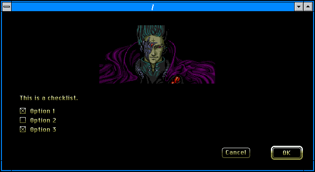
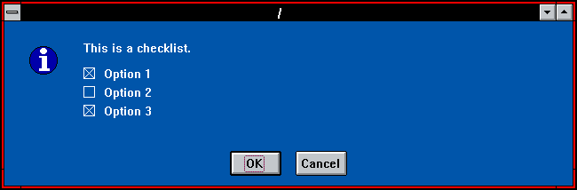
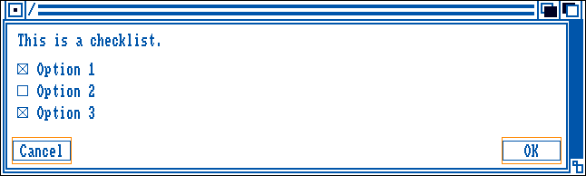
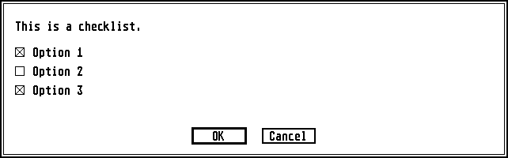
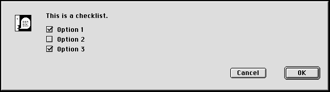
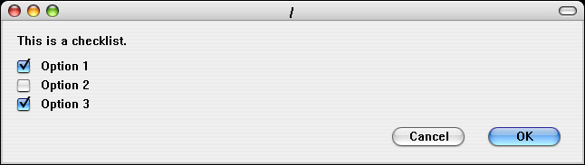

Hotdog LINUX
Hotdog LINUX
How To Show A Checklist Dialog
From the shell, run the command:$ hotdog checklist OK Cancel "This is a checklist." tag1 1 "Option 1" tag2 0 "Option 2" tag3 1 "Option 3"
The second argument contains the text for the OK button.
The third argument contains the text for the Cancel button.
The fourth argument contains the text for the dialog.
The rest of the arguments are interpreted in groups of 3. Each group represents a checkbox.
The first argument in the group is a tag name for the checkbox. This will be printed when the checkbox is checked and the OK button is clicked.
The second argument in the group indicates whether or not the checkbox is checked when the dialog first opens.
The third argument in the group is the text for the checkbox. This will be displayed next to the checkbox.
The style of dialog will be determined by the environment variable HOTDOG_MODE.
To force a dialog to be in a specific style:
$ HOTDOG_MODE="winmac" hotdog checklist OK Cancel "This is a checklist." tag1 1 "Option 1" tag2 0 "Option 2" tag3 1 "Option 3"

$ HOTDOG_MODE="hotdogstand" hotdog checklist OK Cancel "This is a checklist." tag1 1 "Option 1" tag2 0 "Option 2" tag3 1 "Option 3"

$ HOTDOG_MODE="amiga" hotdog checklist OK Cancel "This is a checklist." tag1 1 "Option 1" tag2 0 "Option 2" tag3 1 "Option 3"

$ HOTDOG_MODE="atarist" hotdog checklist OK Cancel "This is a checklist." tag1 1 "Option 1" tag2 0 "Option 2" tag3 1 "Option 3"

$ HOTDOG_MODE="macclassic" hotdog checklist OK Cancel "This is a checklist." tag1 1 "Option 1" tag2 0 "Option 2" tag3 1 "Option 3" $ HOTDOG_MODE="maccolor" hotdog checklist OK Cancel "This is a checklist." tag1 1 "Option 1" tag2 0 "Option 2" tag3 1 "Option 3"

$ HOTDOG_MODE="macplatinum" hotdog checklist OK Cancel "This is a checklist." tag1 1 "Option 1" tag2 0 "Option 2" tag3 1 "Option 3"

$ HOTDOG_MODE="aqua" hotdog checklist OK Cancel "This is a checklist." tag1 1 "Option 1" tag2 0 "Option 2" tag3 1 "Option 3"

If the user clicks the OK button, then the tag name for each checkbox that is checked will be written to STDOUT, separated by a space, and the exit code will be 0. For example, with the above dialog, the 'tag1 tag3' will be written to STDOUT.
If the user clicks the Cancel button or the user closes the dialog, possibly by clicking the window close button or hitting the Escape key, then nothing will be written to STDOUT, and the exit code will be 1.